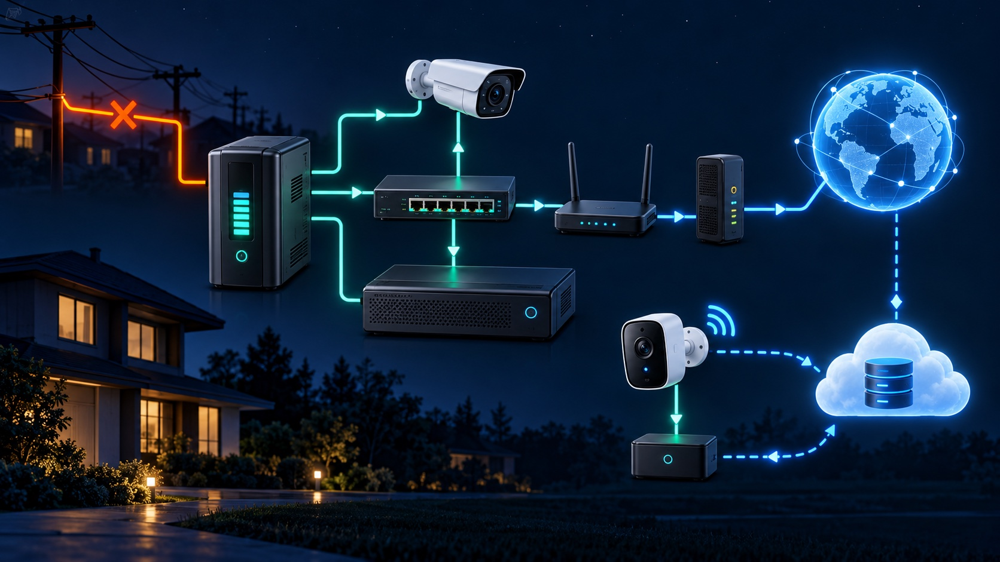
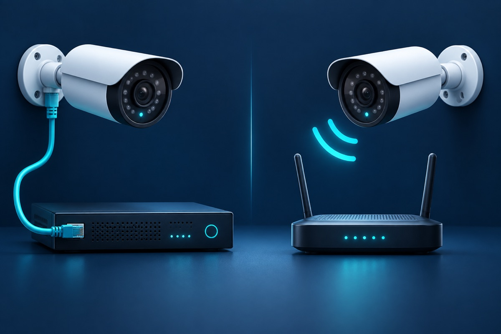

Most mains-powered security cameras stop when power fails unless every essential part of the recording path has backup power. A battery camera may remain powered, but remote viewing, cloud recording and alerts can still fail if the router, modem or internet service goes down. Local recording can continue only when the camera, network equipment and recorder or storage all remain powered.
A camera is only one part of the system. Before choosing backup equipment, trace the complete path from the lens to the saved video:
Backing up only the recorder is not enough if the cameras or PoE switch lose power. Backing up only the cameras is not enough if there is nowhere to save their video.
The backup must cover the NVR and the equipment supplying PoE. Some NVRs power cameras directly; other systems use a separate PoE switch. Add the router and modem only when remote viewing and alerts are part of the outage goal. For help choosing the architecture, compare wired and wireless camera systems.
Keep the DVR and the camera power-distribution supply on backup power. A monitor is optional for recording and can consume battery capacity that would otherwise support cameras and storage. The router and modem are still required for remote access.
Each camera needs power, and the wireless access point or router must stay on for network recording. If the product records only to the cloud, an operating internet connection is also required. Check the exact model's behavior when Wi-Fi or internet service is unavailable.
An internal battery may keep the camera running, but recording behavior varies. A camera with local storage may continue saving clips; a cloud-only model may not upload until connectivity returns. Battery level, event frequency, temperature and product settings can all affect runtime, so use the manufacturer's documentation and test the actual configuration.
A practical outage plan starts with a specific goal:
This separation matters because internet loss and power loss are different failures. Local video may continue while the phone app appears offline. Our cloud-versus-local storage guide explains how each recording destination behaves.
Axis advises planning from maximum camera consumption and accounting for PoE cable losses and power-intensive features. Schneider Electric's UPS guidance likewise bases runtime selection on the total supported load and notes that battery age, temperature and load affect real runtime. That is why a blanket promise such as “a UPS lasts two hours” is unreliable.
Test when losing a few minutes of coverage will not create a safety problem. Avoid factory resets, storage formatting or random cable changes.
If video is live but not saving, use the evidence-preserving steps in our DVR/NVR not-recording guide. If a camera remains offline after power returns, follow the camera offline checklist.
Large displays, speakers and unrelated office equipment shorten camera runtime. Put only the devices required for the chosen outage goal on the camera-system UPS, stay within its rated capacity and follow the manufacturer's installation and battery-replacement instructions.
A useful backup plan also verifies automatic restart, correct time synchronization, active recording schedules and healthy storage after power returns. For Greater Los Angeles properties, Tech Secure 360 can trace the recording path, measure the protected load, identify single points of failure and test recovery. We also provide DVR and NVR repair when the recorder does not return to normal operation.

Both have real trade-offs. Here's a plain-English breakdown to help you pick.

Cloud or local recorder? Each has real trade-offs - and a hybrid often beats both.

LA's sun, heat, and salt air quietly wreck cheap cameras. Here's how to choose ones that last.
Tell us about your place and we'll respond within one business day with a tailored plan and pricing. Or call us right now.
Your request is in. A Tech Secure 360 specialist will reach out within one business day. Need help now? Call (747) 336-2737.